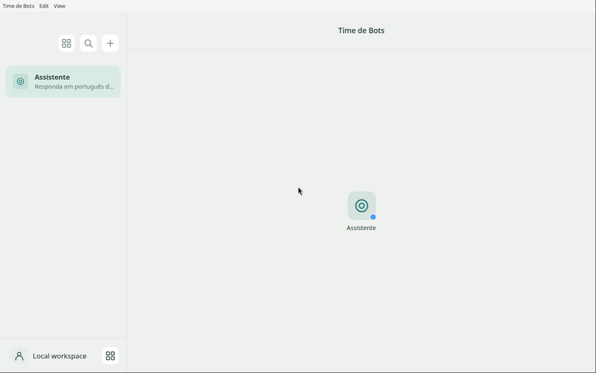

Un panel con bots que tienen rol, memoria y tareas programadas. Las respuestas vienen de tu login de Claude o de Codex, sin clave de API.
Time de Bots ("Equipo de Bots" en portugués) es un kit gratuito de INEMA que instala un panel de bots en tu computadora Linux o Mac, o en una VPS (un servidor alquilado en internet). Cada bot tiene nombre, avatar, rol, memoria y tareas programadas, y puedes conversar con uno a la vez o con varios en grupo. Las respuestas vienen de tu suscripción de Claude o de Codex, con el login normal del programa oficial, sin clave de API y sin cobro por uso. Necesitas Node.js 22 o más reciente y una cuenta de Claude o de ChatGPT con Codex.
Tu equipo de bots con la suscripción que ya pagas: qué hace cada bot, las 3 formas de usarlo, las pruebas del 09/11/2026 y el paso a paso. Audio en portugués.
La app de bots es un programa de computadora (hecho en Electron, licencia MIT). El kit de INEMA pone esa app a funcionar de la forma correcta: instala, corre las pruebas, abre varios equipos y arma el modo servidor.
La app acepta solo el login claude.ai de Claude Code o el login de Codex. El kit/iniciar.sh quita las claves de API del entorno antes de abrir.
Cada bot tiene nombre, avatar, instrucciones, memoria y tareas programadas. Conversa con uno o llama a varios juntos en un grupo.
Cada instancia es un equipo separado, con sus propios bots, conversaciones y memoria. Ej.: uno personal y uno de trabajo en la misma máquina.
Entras a tu cuenta una vez, en la terminal. La app usa ese login para responder. Los bots quedan en el panel, conversan solos o en grupo y corren tareas a la hora programada.
La app se abre en una ventana, como cualquier programa. Los datos de cada equipo quedan en ~/.local/share/time-de-bots/<instancia>.
El servidor crea una pantalla virtual y muestra la app en el navegador (noVNC), todo limitado a 127.0.0.1. Abres un túnel SSH desde tu computadora y entras en http://localhost:6081/vnc.html. Ningún puerto queda abierto a internet.
Puedes empezar en la computadora y después llevarlo a la VPS. Las tres usan el mismo kit.
Linux o Mac, para quien quiere los bots a mano. Probado en Linux; Mac todavía no se probó.
kit/iniciar.shPara separar lo personal del trabajo, o un equipo por cliente.
kit/iniciar.sh --instancia trabalhoBots y tareas programadas encendidos 24 h, accesibles desde cualquier lugar.
kit/vps/nova-instancia.sh principal 1El kit/instalar.sh verifica todo esto y avisa lo que falta.
Descárgalo en nodejs.org. Verifica la versión:
node --version # v22 o más
Una cuenta de Claude (suscripción) o de ChatGPT con Codex, y el programa oficial instalado. Claude Code: guía de instalación.
npm i -g @openai/codex # si vas a usar Codex
Para descargar el kit y actualizarlo después. En la VPS: Ubuntu 24.04 o más reciente y un usuario común con sudo (no root).
git --versionComandos reales del kit. Córrelos en la terminal, en la carpeta del kit. ¿Prefieres que el asistente lo haga por ti? Salta a los prompts listos.
Clona el repositorio y entra en la carpeta.
git clone https://github.com/inematds/time-de-bots.git && cd time-de-bots
Verifica Node y npm, instala las dependencias, descarga los archivos de la app (verificados por checksum) y corre las 193 pruebas. No entra a ninguna cuenta.
kit/instalar.sh # al final: "[ok] 193 testes passaram"
Tú mismo haces el login en la terminal. El comando claude abre Claude Code: la primera vez te pide entrar a tu cuenta; después de entrar, sal con /exit. ¿Todavía no tienes Claude Code? Mira la guía de instalación. Usa uno de los dos:
claude # entra con tu cuenta de Claude codex login # o entra con tu cuenta de Codex
Usa el mismo código de la app y el login de Claude Code para pedir una respuesta de verdad (modelo haiku, el más liviano). Guarda el resultado en kit/verificacao/ultima-resposta.json. Esta prueba es solo para Claude.
node kit/scripts/conferir-resposta.mjs # "Login do Claude: OK (assinatura claude.ai)"
Abre la instancia "principal". En Linux, si aparece el aviso de sandbox desactivado, la app funciona igual; mira cómo activarlo en COMO-LIGAR-SANDBOX.md (en portugués).
kit/iniciar.sh
En la app, ve a Settings → AI subscription, elige Claude o Codex y crea el primer bot con el botón +. La app ya trae un bot "Assistente" (Asistente) que responde en portugués.
Una instancia es una copia separada de la app, con sus propios bots, conversaciones y memoria. El nombre acepta letras, números, - y _.
kit/iniciar.sh --instancia trabalho # datos en ~/.local/share/time-de-bots/trabalho
~/time-de-botsEntra al servidor por SSH con un usuario común que tenga sudo (no root). El servicio espera el kit exactamente en esta carpeta.
git clone https://github.com/inematds/time-de-bots.git ~/time-de-bots && cd ~/time-de-bots
Instala la pantalla virtual, el VNC y el noVNC (programas que muestran esa pantalla en tu navegador) y las bibliotecas de la app (con sudo), instala Node 22 si falta, deja los servicios corriendo después de que sales del SSH y corre el kit/instalar.sh. No abre ningún puerto en el firewall. En el VPS, el sandbox también se activa aparte, con los comandos de Cuidados.
kit/vps/instalar-vps.sh
El instalar-vps.sh no instala Claude Code ni Codex: instala en el servidor el que vayas a usar (Claude Code con la guía de instalación; Codex con sudo npm i -g @openai/codex). En el servidor no hay navegador; en Codex, usa el login por código de dispositivo.
claude # cuenta de Claude codex login --device-auth # o cuenta de Codex
Crea el servicio time-de-bots@principal, que arranca solo y se reinicia si se cae (hasta 2 GB de memoria por instancia). Al final, imprime el comando del túnel.
kit/vps/nova-instancia.sh principal 1 # pantalla :21, VNC 5921, navegador 6081
El túnel SSH lleva un puerto del servidor hasta tu computadora por dentro de la conexión SSH, sin abrir nada a internet. En tu computadora, copia el comando que imprimió el nova-instancia.sh (o cambia usuario@servidor por tu usuario y la IP del VPS) y deja la terminal abierta. Después, en el navegador, entra a la dirección y haz clic en Connect.
ssh -N -L 6081:127.0.0.1:6081 usuario@servidor # en el navegador: http://localhost:6081/vnc.html
El número (1 a 50) define la pantalla y los puertos: con 2, el navegador queda en el puerto 6082.
kit/vps/nova-instancia.sh trabalho 2 # túnel y navegador en el puerto 6082 systemctl --user disable --now time-de-bots@principal # apaga una instancia

Pégalos en Claude Code o en Codex. Los mismos textos están en kit/prompts/ (en portugués). El login sigue siendo tuyo: el asistente se detiene y espera a que entres a tu cuenta.
Instala, corre las pruebas, verifica la respuesta real y abre una instancia desechable.
Córrelo en el servidor, ya conectado por SSH. Prepara todo, enciende la instancia y verifica que los puertos estén cerrados.
Con la app ya abierta: el asistente pregunta sobre tu trabajo y propone 3 bots listos para copiar.
Solo lo que corrió de verdad. Lo que no está aquí no se verificó.
| Prueba | Resultado |
|---|---|
Pruebas de la app (npm test) en Linux ARM64 | 193 de 193 |
| Pruebas de la app en una VPS Ubuntu 24.04 x86_64 (4 vCPU, 15 GB) | 193 de 193 |
| Respuesta real con la suscripción de Claude (modelo haiku) | recibida en 3,8 s, login claude.ai |
| Dos instancias al mismo tiempo en la computadora | abiertas, datos separados |
| Dos instancias como servicio en la VPS | activas, puertos solo en 127.0.0.1 |
| Respuesta real en la VPS, Codex, voz, navegador en la nube, Composio | no probados |
Las pruebas de arriba se hicieron en Linux. El kit tiene soporte para Mac, pero Mac todavía no se probó.
Composio es un servicio opcional que conecta los bots con tus otras apps (correo, agenda, hojas de cálculo), cada una autorizada por ti, con cuenta y clave de Composio. Navegador en la nube es una computadora aparte, alojada por ti, donde el bot navega por la web mientras miras y puedes tomar el control. Los dos vienen apagados.
Software experimental, sin garantía. Prueba primero con una instancia desechable.
La app solo acepta el login claude.ai de Claude Code o el login de Codex. El kit/iniciar.sh quita ANTHROPIC_API_KEY, OPENAI_API_KEY y CODEX_API_KEY del entorno, para que nada vaya a cobro por API sin que lo veas.
La suscripción tiene límites de uso y términos del proveedor. El panel no los aumenta: varios bots usan la misma cuota.
Nunca pegues token ni contraseña en el chat del asistente. El login lo haces tú, en la terminal.
VNC y navegador escuchan solo en 127.0.0.1. Entras por túnel SSH; nada queda abierto a internet.
El sandbox de Electron es una protección que separa las pantallas de la app del resto del sistema; sin él la app abre igual, solo con menos protección. Para activarlo (una vez, después de cada npm ci), con sudo:
cd app/node_modules/electron/dist sudo chown root:root chrome-sandbox sudo chmod 4755 chrome-sandbox
Antes de actualizar, copia la carpeta de datos ~/.local/share/time-de-bots/. Ahí quedan los bots, conversaciones y memoria de cada equipo.
Lo esencial en pocas líneas.
No. La app responde con tu suscripción de Claude o de Codex, con el login del programa oficial. Las claves de API se quitan del entorno antes de abrir.
No. Solo corren con la app abierta. Para que queden encendidas 24 h, usa el modo VPS.
Sí. Cada --instancia (en la computadora) o cada nova-instancia.sh (en la VPS) es un equipo separado, con datos propios.
En una conversación en grupo, llámalos por nombre con @nombre, o a todos con @everyone.
Codex es una de las opciones en Settings → AI subscription, pero la respuesta real con Codex todavía no se probó (mira la tabla). La prueba de respuesta del kit verifica solo Claude.
En Linux, el sandbox necesita un ajuste con sudo. Sin él la app abre igual, con menos aislamiento. Los comandos están en Precauciones.
Agrega el puerto y la clave en el mismo comando: ssh -i ~/.ssh/minha-chave -p 2222 -N -L 6081:127.0.0.1:6081 usuario@servidor. Para el segundo equipo, otro puerto: -L 6082:127.0.0.1:6082. Si el puerto 6081 ya está en uso en tu computadora, cambia solo el primer número (ej.: -L 7081:127.0.0.1:6081) y abre http://localhost:7081/vnc.html.
conferir-resposta.mjs dice "Login do Claude: NÃO". ¿Y ahora?Ejecuta claude con el mismo usuario que abre la app e inicia sesión con tu cuenta Claude (no con clave de API). Comprueba con claude auth status: debe aparecer la sesión iniciada por claude.ai. Si Claude Code no está instalado, instálalo desde el sitio oficial. En la VPS, tras iniciar sesión, reinicia el equipo: systemctl --user restart time-de-bots@principal.